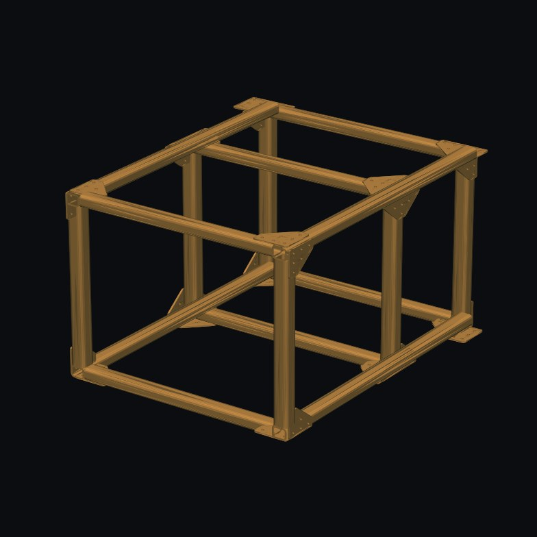
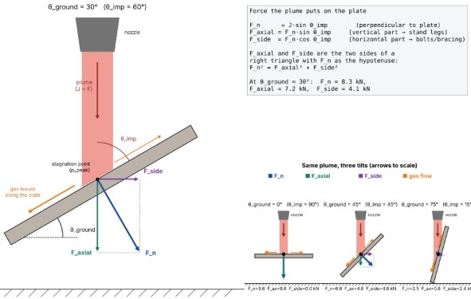

Overview
I lead the 3D CAD (Inventor), FEA (ANSYS) and manufacturing of the thrust structure for ERPL's vertical test stand (VTSD), sized for a 2,200 lbf vehicle engine. The engine fires straight down, so the project has two halves that depend on each other: the structure that holds the engine and reacts its thrust, and the flame diverter plate underneath that turns the plume away.
Design
- Square-geometry frame from A500 2 x 2 x 1/4 in tubing, with triangular gusset brackets at the corners and T-junctions and tie-down points on the outer posts. It evolved from an earlier 80/20 extrusion concept.
- Modeled in Autodesk Inventor with frame generator skeletons, in a full assembly with the thrust plate, an engine stand-in and the flame diverter.
- Bill of materials and drawing package on the ERPL drawing template.
Calculation process
Alongside the ANSYS FEA, I wrote a Python hand-calc tool so every geometry change could be re-checked in seconds. Its steps:
- Inputs
Engine thrust and a 1.5 safety factor on it, A500 Grade C properties (E = 29,000 ksi, Fy = 50 ksi, Fu = 62 ksi), tube area and moment of inertia, and the post and cable node coordinates measured from the CAD.
- Self-weight
Frame weight from the solid volume of the CAD model (878 in³) times the steel density. It partly offsets the uplift.
- Tie-down cable tensions
Rigid-body statics (force and moment balance) solved by least squares for the 4 outer tie-down cables, flagging any cable that would go slack.
- Post forces
The net vertical load is distributed across the 6 posts with a rigid-diaphragm (bolt-group) method, so off-center thrust loads the nearer posts more.
- Stress check
Axial stress in every post against the A500 allowables.
- Euler buckling
Critical load of the posts for a compression load case. Under normal firing the posts are in tension, so buckling only governs in the alternate case.
- Cable capacity
Cable tension against the working load limit, with a factor of safety for each cable.
- Deflection
Axial-only estimate of the deflection at the thrust point. It leaves out bending, so it's optimistic and only used as a cross-check against the FEA.
The flame diverter link
The plate under the engine was sized with my flame diverter model. The two depend on each other:
- The stand geometry sets the design space for the plate: 2 to 3.5 ft below the nozzle exit, 24 x 24 in.
- The diverter model returns the loads the plate puts back into the stand: the axial part into the legs and the side part into the bolts and bracing (for example 7.2 kN and 4.1 kN at a 30° plate), with a dynamic load factor of 2 for startup.
- It also confirmed that the plate height doesn't change the thermal result (the plate is always inside the plume's potential core), so the plate can go wherever it fits the frame best. A 1/2 in A500 plate passes at any angle.
Media

